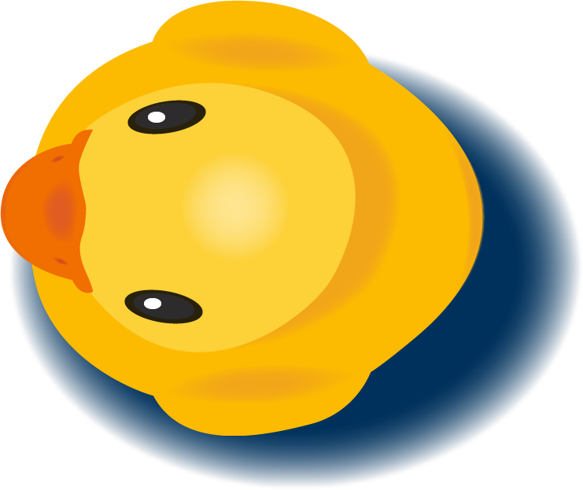

<!DOCTYPE html>
<html lang="en">

<head>
    <meta charset="UTF-8">
    <meta name="viewport" content="width=device-width, initial-scale=1.0">
    <meta name="viewport" content="width=device-width, initial-scale=1, shrink-to-fit=no">
    <link rel="shortcut icon" href="favicon.png" />
    <link href="https://fonts.googleapis.com/css?family=Open+Sans:700&display=swap" rel="stylesheet">
    <link href="https://fonts.googleapis.com/css?family=Baloo+Bhai|Open+Sans&display=swap" rel="stylesheet">
    <link rel="stylesheet" type="text/css" href="css/rubberducky/duck.css">
    <title>Rubber Ducky App</title>
</head>

<body>
<section>
<div class="heroImage">
        <a href="index.html" class="return">back</a>
        <a href="index.html" class="backRubber">
                
            </a>
                <div class="heroTitle">
                    UX / UI / Research / IxD / Illustration / IA
                </div>
                <div class="headerIntro">
                    <div class="boldHeader">Rubbery Ducky</div>
                    <div class="headerDescript">Case Study - 2020</div>
                    <div class="headerFull">In a 6 week course our instructor gave each student a topic - mine was ‘coding’. I was asked to create a platform that solved a problem around this concept. </div>
                </div>
                <div class="logo">
                    
                </div>
            </div>
</section>
    <main>
    <!--hero end-->
    <div class="container">
        <div class="itemLeft header">
                <div class="secTitle">
                    Project summary
                </div>
        </div>

        <div class="itemLeft content-1">
            <div class="boldQouteOne">
                "Let the Rubber Duck debug."
            </div>
        </div>

       <div class="itemLeft content-2">
            <div class="textContainer">
                <div class="leftHalfText">
                    The learning curve of developing constructs in coding or programming is steep. There are many platforms that help folks that are in the very beginning stages of learning - often referred to as the ‘hand holding period’. The platforms that are available after this period are stackoverflow and websites like it. They are helpful to get beginner developers ‘unstuck’. Unfortunately stackoverflow often involves a lot of searching for keywords and plugging in code that is not necessarily applicable to the problem. Collaborating with peers is important and helpful but explaining a specific issue can be time consuming.</br></br> Could a platform be created that would allow beginner programmers to problem solve? What if the platform had the ability to learn from the user - becoming smarter and more specific to the user the more it was used.
                </div>
            </div>
        </div>
        <div class="item sidebar">
            <div class="containerSm">
                <div class="sectionTitle">
                    My role
                </div>
                <div class="rightHalfText">
                    Innovation, discover, user research, rapid prototyping, design, animation, testing
                </div>
                <div class="sectionTitle">
                    Context
                </div>
                <div class="rightHalfText">
                    Platform created for a school project.
                </div>
                <div class="sectionTitle">
                    Timeline
                </div>
                <div class="rightHalfText">
                    6 weeks
                </div>
            </div>
        </div>

        <div class="item content-3">
            <div class="bodyFullWidth bgMarg">
                <span class="weeTitle">Project scope</span><br><br>
                I came up with a concept, did user research to make sure the product was viable, created affinity diagrams, did rapid prototyping, paper prototyping, wireframing, tested the product and created high fidelity mockups to test. As a further push for this project I researched how to program Rubber Ducky with voice activation and how to connect it to the Google AI API.
            </div> 
        </div>

            <div class="item content-4">
                <div class="boldQoute">
                    “Basic syntax is just the beginning. After the handholding period is over - that’s when the learning really starts.”
                </div>
            </div>

        <div class="item content-5">
            <div class="bodyFullWidth smMarg">
                <span class="weeTitle">Problem</span><br><br>
                There are many ways to solve a programming or development problem. There are different standards across languages and always different paths to a similar outcome. The idea of this can leave a beginner programmer frozen, not knowing which way to get out of the most simple circumstances. This stage of programming is known as the ‘desert.’
            </div>
        </div>
        <div class="item content-6">
                
        </div>

        <div class="item content-7">
            <div class="rightContainer">
                <div class="sectionTitle">Process</div>
                <div class="processTxt">After coming up with the concept of Rubber Ducky I did research on how many other resources were available and what level of programmer those programs helped with.
                </div>
            </div>
        </div>

        <div class="item content-8">
                
        </div>


        <div class="item content-9">
            <div class="bodyFullWidth margTop">
                <span class="sectionTitle">Affinity Diagram</span><br><br>
                I used the affinity diagram process to come up with the concept for this application by writing out everything that was associated with the topic I was given. Once I came up with an idea I organized and reorganized my cards to get a solid overview of what the platform would involve. 
            </div>
        </div>

        <div class="item content-10">
                
                
        </div>

        <div class="item content-11">
            <div class="leftHalfThirdOne">
                <span class="sectionTitle">Relational pillars</span><br><br>
                The notes were grouped into pillars. These pillars were categories. Within the categories the concepts are ordered in importance.
            </div>
            <div class="rightContainer">
                
            </div>
        </div>

        <div class="item content-12">
            <div class="leftHalfUserFlow">
                <span class="sectionTitle">User flow</span><br><br>
                The most important user flow in this application is in the onboarding process. This is where the program is introduced to a users speech by asking them to repeat sentences. It is also where the user becomes familiar with how the platform works.
            </div> 
        </div>   
        
         <div class="item content-13">        
            
        </div>

            <div class="item content-14">
                <div class="leftHalfThird">
                    <div class="core"> The core user flow that I did was for the circular pattern of the user going through the program after onboarding.</div>
                </div>
            </div>

            <div class="item content-15">
                    
                </div>

            <div class="item content-16">
                <div class="wireframeContainer">
                        <span class="sectionTitle">Wireframe iterations</span><br><br>
                        I focused on the onboarding experience. 
                </div>
            </div>
            <div class="item content-17">
                    
            </div>
 
            <div class="item content-18">
                <div class="paperPrototypeContainter">
                    <div class="insidePaper">
                        <div class="sectionTitle">Paper protoype / Rapid prototyping</div>
                            
                            
                    </div>
                </div>
            </div>

            <div class="item content-19">
                    <div class="bodyFullWidth">
                    <div class="sectionTitle">User testing</div>
                   The first round of user testing was done with 20 people, half of which knew how to code and the other half did not know how to code. </br></br>The second round of user testing was done with the 10 people that had experience with programming. This involved a moderator and an observer. The observers notes were then translated into information that drove the changes for the next round. </br></br>After the second round of testing the product received an overhaul - the colour scheme changed as well as the name and the logo to become more playful. </div>
                
            </div>

            <div class="item content-20">
                    <div class="box">      
                        <div class="sectionCentered">Version of entry points</div>
                        <div class="leftEven">
                            
                            <div class="versionTitle">
                                v1
                            </div>
                        </div>
                        <div class="rightEven">
                            
                            <div class="versionTitle">
                                Final
                            </div>
                        </div>
                     </div>
                </div>

          
            <div class="item content-21">
                <div class="bodyFullWidth lower">
                    The third round of testing was done with the 10 people, 5 of these people were also in the second round of testing.
                </div>
            </div>

            <div class="item content-22">
                <div class="ribbonImg centered">
                    <div class="lilVid">
                        <video class="rub" width="150" height="260" autoplay loop>
                            <source src="imgs/casestudies/duck/v1RubberD_1.mp4" type="video/mp4">
                        </video>
                        <div class="ribbonTxt">
                            v1
                        </div>
                    </div>
                    <div class="lilVid">
                        <video class="rub" width="150" height="260" autoplay loop>
                            <source src="imgs/casestudies/duck/v2RubberD_1.mp4" type="video/mp4">
                        </video>
                        <div class="ribbonTxt">
                            v2
                        </div>
                    </div>
                    <div class="lilVid">
                        <video class="rub" width="150" height="260" autoplay loop>
                            <source src="imgs/casestudies/duck/v3RubberD_1.mp4" type="video/mp4">
                            Your browser does not support the video tag.
                        </video>
                        <div class="ribbonTxt">
                            v3
                        </div>
                    </div>
                    <div class="lilVid">
                        <video class="rub" width="150" height="260" autoplay loop>
                            <source src="imgs/casestudies//duck/v4RubberD_1.mp4" type="video/mp4">
                            Your browser does not support the video tag.
                        </video>
                        <div class="ribbonTxt">
                            v4
                        </div>
                    </div>
                </div>
             </div>


        <div class="item content-23">
        <div class="bodyFullWidth">
                    <div class="sectionCentered">Final design gallery</div>
                    <div class="centeredUserJourney">Main user journey</div>
                    <div class="ribbonImg">
                            
                            
                            
                            
                    </div>
                </div>
            </div>


            <div class="item content-24">
            <div class="bodyFullWidth">
                <div class="sectionCentered">Onboard learning</div>
                <div class="ribbonImg">
                        
                        
                        
                        
                </div>
            </div>
        </div>

        <div class="item content-25">
        <div class="bodyFullWidth">
                <div class="ribbonImg">                
                    <div class="sectionCentered">Select screens</div>
                    <div class="threeScross">
                        
                    </div>
                </div>
                </div>
            </div>

            <div class="item content-26">
                <div class="ribbonImg">                      
                        <div class="sectionCentered">Full prototype</div>
                        <video class="fullVersion" width="200" height="300" controls>
                            <source src="imgs/casestudies/duck/RubberDuckFull_1.mp4" type="video/mp4">
                            Your browser does not support the video tag.
                        </video>
                </div>
            </div>

            <div class="item content-27">
                <div class="ribbonImg">       
                    <div class="sectionCentered">User Usage</div>
                    <video class="lorna" width="700" height="600" autoplay loop muted>
                        <source src="imgs/casestudies/duck/lorna_1.mp4" type="video/mp4">
                        Your browser does not support the video tag.
                    </video>
                </div>
            </div>

            <div class="item content-28">
                <div class="outcomeTalk margTop">               
                    <div class="sectionTitle">Outcome</div>
                    My goal for this case study was to flush out the platfrom as throughly as I could within the timeframe. I also wanted to be able to learn how to use voice recognition worked within the timeframe of this course. 
                </div>
            </div>

<!-- 
            <div class="item content-27">
                <div class="test margTop">  
                    <div class="sectionTitle">Coding test</div>
                    Click the button and say the phrase displayed.</br> To get a new phrase click the button again!
                </div>
            </div>

            <div class="item content-28">
                <div class="button">
                    get a phrase!
                </div>
                <div>
                    <p class="phrase"></p>
                    <p class="result"></p>
                    <p class="output"></p>
                </div>        
                <span class="feedback">
                    Detected Audio: <span>...</span>
                </span>
            </div>-->
            

            <div class="item content-29">
                <div class="back">
                    <a href="#">
                        
                    </a>
                </div>
            </div>

            <div class="item content-30">
                <div class="base">
                    If you have made it this far thank you for reading!
                </div>
            </div>

            <div class="item content-31 baseSm"><span class="disappear">Want to chat?</span><br>
            <span class="iconHand"> ✍🏻</span> charliestableford2@gmail.com
        </div>

        <div class="item content-32">
        <a href="redesign.php" class="iconSmL"></a>
        <a href="softly.php" class="iconSmL"></a>
        <div class="previous">
                <span class="iconLeft">👈🏻</span> previous case study
            </a>
</div>
            <a href="with.php" class="next">
            next case study <span class="iconRight">👉🏻</span>
            </a>
</div>
         </div>
    </main>
</body>
<script
  src="https://code.jquery.com/jquery-3.4.1.min.js"
  integrity="sha256-CSXorXvZcTkaix6Yvo6HppcZGetbYMGWSFlBw8HfCJo="
  crossorigin="anonymous"></script>
<script src="../../js/voice.js"></script>
<script src="../../js/up.js"></script>
</html>